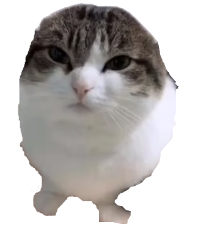
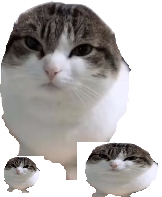

Definition not found
When markers are added to a base word, or a marker is added to the end of another marker, vowel harmony must take place. Vowel harmony as mentioned before will change the vowels, the thing changing the vowels is the last("last" does not mean it has to be the last letter in the word, "last vowel" refers to the last used vowel in a word.) vowel in the base word or previous marker. There are two types of vowel harmony, both of these types assign a vowel to whatever vowel was last present in the word. Markers will have their vowels replaced with numbers because the actual vowel present can't be determined until it is attached to a word, these types are called "E-type"(represented by a superscript 2) and "I-type"(represented by a superscript 4) vowel harmony. It should be noted that the vowel harmony is based on the sounds, not the letters. Because native Turkish letters have consistent sounds, it is easy to mix this up, but foriegn words will have different letters for sounds.
| Front | Back | |||
|---|---|---|---|---|
| Unrounded | Rounded | Unrounded | Rounded | |
| Closed | i | y | ɯ | u |
| Opened | e | œ | a | o |
E-type vowel harmony is the easiest to type to master, in Turkish E-type vowel harmony results in only 2 possible vowels being used in a marker, which are: E and A. Here is how E-type vowel harmony works:
IF: a, ı, o, or u THEN USE: A
IF: e, i, ö, or ü THEN USE: E
A way to remember this is by noticing the fact that: if the letter is dotless, A is used. And if the letter has (a) dot(s) or is e, E is used. The real reason these letters are chosen is because E is a front vowel(like i, ö, and ü) and A is a back vowel(like ı, o, and u)
L²r - Plural and Third-Person plural marker.
Kedi - Cat
Kediler - Cats
Adam - Man
Adamlar - Men
I-type vowel harmony works the same, but there are 4 possible vowels.
IF: a, or ı THEN USE: ı
IF: e, or i THEN USE: i
IF: o, or u THEN USE: u
IF: ö, or ü THEN USE: ü
A way to remember this is to look back at the vowel table, notice how: back unrounded vowels use ı, back rounded vowels use u, front unrounded vowels use i, and front rounded vowels use ü.
(Y)⁴m - First-Person singular marker
Gitmek - To go
Giderim - I go
Gidiyorum - I am going
Why the t becomes a d is mentioned in the "Consonant Alterations" section.
O düşünüyor - He/She/It is thinking
L⁴k - -ness
Kitap - Book
Kitaplık - Bookshelf
In vowel harmony, consonants will change if a vowel comes after them. These consonants(which start out as voiced consonants) will become voiceless consonants if a marker starting with a vowel is added after it.
Below is a list of the changes(do note that K is not the voiced version of Ğ, but has been paired with that letter):
T - D
P - B
K - Ğ
Ç - C
(Y)⁴m - First-Person singular marker
L²r - Plural and Third-Person plural marker.
Çocuk - Child
Çocuklar - Children
Çocuğum - My child
You can add personal markers to nouns to denote possession(so adding the first-person marker to a noun would suggest that you own the noun)
The full vowel harmony table:
| E-type | a | e | ||
|---|---|---|---|---|
| I-type | ı | u | i | ü |
| Sound | /a/, /ɯ/ | /u/, /o/ | /e/, /i/ | /y/, /œ/ |
| Letter | a, ı | u, o | e, i | ü, ö |
| Approx. | ah, uh | uu, oh | ey, ee | ee, eh (rounded lips) |
| Word | Adam, Sıcak | Uzun, Onun | Kedi, İnşaat | Müzik, Öğrenci |
There is also consonant harmony, which is like vowel harmony but it harmonizes consonants with other consonants instead of vowels with vowels or vowels with consonants: Consonant Harmony